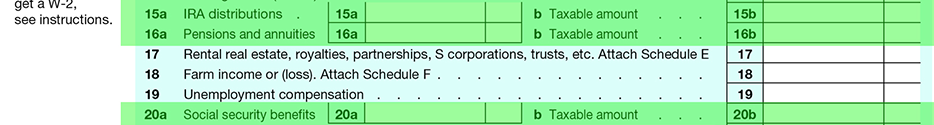

Income
Retirement income includes distributions from IRA plans, company sponsored plans, pension plans and Social Security. This information can be found on these highlighted lines of Form 1040.

If you see entries here, then there is a potential opportunity to assist the client with retirement income planning. To discern this need, you will need to gather more facts by asking questions such as the following:
Example Questions
- When was retirement?
- What benefits are payable in retirement?
- What type of cash flow is the client expecting during retirement?
- Are the current payments meeting the cash flow need?
- Will the client rollover a company-sponsored plan into an IRA?
- Does the client receive any other benefits that are not being paid in the current year?
- Will the client have access to deferred income?
- What are the plans for retirement?
- Will invested assets need to produce income to supplement retirement plan payments?
- Are your retirement income assets allocated to maximize your after-tax return?
- Are your retirement income assets allocated in accordance with your risk tolerance?
As these questions are answered, needs may surface. If so, be sure to ask good open-ended questions that will help the client question the current approach and seek resolution of the need. For example, if it appears that cash flow needs are not being met or future needs have not been planned for, you might ask:
Example Questions
- How has your advisor structured your portfolio so that you don't have to worry about your cash needs?
- How has your advisor structured your portfolio to provide the ongoing income you need without having to resort to untimely sales of assets?
- How has your advisor anticipated and planned for the cash need you will have regarding (a future anticipated event)?